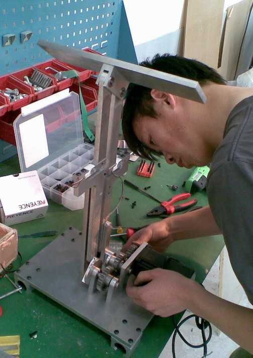

Jiang Wei finished his final year project entitled “Preliminary measurements of flow field around a pitching and plunging flat plate” in June 2011 under supervision of Dr. Gao. He worked in Turbulence Control Lab since Oct. 2010. He designed and fabricated a mechanical system that was capable of mimicking the motions of a flapping wing of a bird or an insect. The amplitudes of the sinusoidal motions can be adjusted, the phase difference between the pitching and plunging motions can also be changed. He performed preliminary measurements of the force applied on a flat plate in these motions and a flow visualization test. He reached a conclusion that the phase difference between the pitching and plunging motion was crucial for the lift generation. After graduation, Mr. Jiang will be working for Ebara Co. in Tokyo, Japan as a mechanical design engineer. More about his work and flapping wing research, please visit this page. |
|
 |